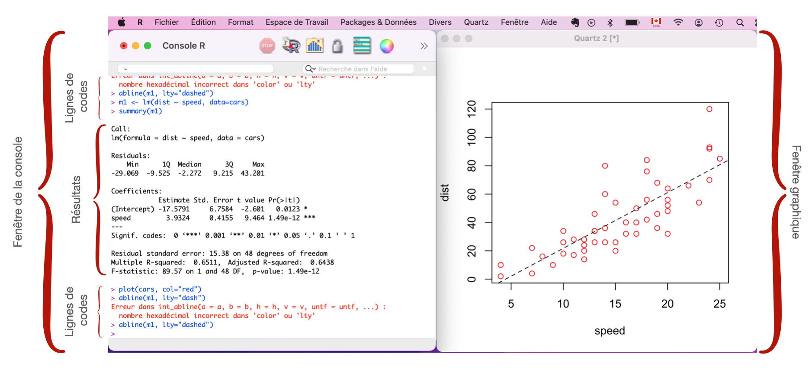
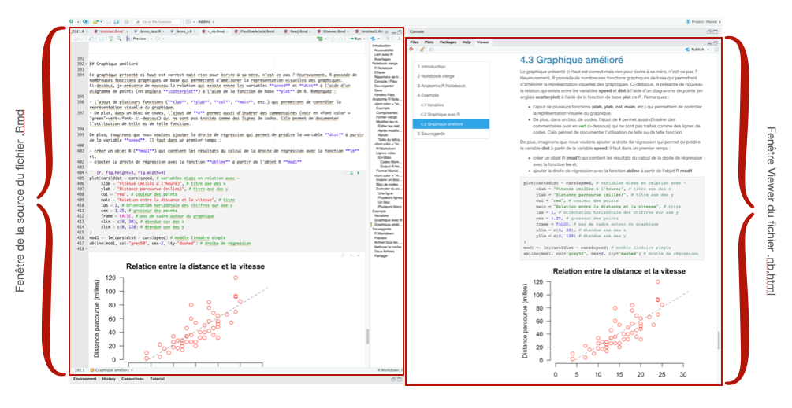

1 Introduction
Qui n’a pas perdu son temps, ou même pire, fait des erreurs, lors de la transcription des résultats d’une analyse statistique vers son traitement de texte (ex: Microsoft Word, LaTeX, LibreOffice, etc.) ? Je vous promets que si vous suivez la démarche que je propose dans le présent livre, cette approche du copier-coller sera bientôt chose du passé. Finies les erreurs, finie la perte de temps et vive la productivité !
Mais tout d’abord, examinons brièvement les raisons qui me poussent à proposer l’utilisation du format R Notebook à partir de RStudio.
1.1 Interface de R
Dans sa version de base, l’interface d’utilisation du logiciel R est relativement aride (voir Figure @ref(fig:fig1)), ce qui n’en facilite pas l’apprentissage. Toute information échangée entre l’analyste et le logiciel passe par la console de R. Une seule petite ligne où une série de codes, plus ou moins complexes, est écrite et soumise au logiciel. Ce dernier, à partir des consignes de l’analyste, emmagasine l’information, la transforme ou l’analyse. Les résultats sont ensuite affichés après la ligne de codes dans une fenêtre déroulante. Donc, chaque nouvelle ligne de codes entraîne la disparition du résultats obtenus précédemment. Cette interface est donc particulièrement désagréable à utiliser et plus la démarche d’analyse est longue, plus elle est sujette aux erreurs de transcription des résultats de l’analyse vers le logiciel de traitement de texte. De plus, lors de la création d’un graphique, une fenêtre additionnelle s’ouvre à l’écran et bloque, régulièrement, la vue de la console de R.
1.2 Interface de RStudio
Heureusement, certains logiciels ont été développés pour agrémenter l’usage de R. Parmi ceux-ci, le logiciel RStudio est possiblement celui dont l’utilisation est la plus répandue. RStudio présente une interface divisée en quatre fenêtres (voir Figure @ref(fig:fig2)).
- La fenêtre Source comprend les lignes de codes du script .R ou .Rmd.
- La fenêtre Console permet d’écrire une ligne de codes R ou d’obtenir les résultats d’un code R.
- La fenêtre Environnement, History, Connexion contient les objets R en mémoire et l’historique des codes R utilisés.
- La fenêtre Files, Plots, Packages, help, Viewer comprend de nombreuses fonctions qui permettent de copier les fichiers, examiner les graphiques, d’installer des extension, etc..
Malgré sa flexibilité, dans sa version de base, RStudio demeure rigide dans sa façon de présenter l’information. En effet, les tableaux, graphiques et/ou ensembles de données doivent être exportés vers d’autres logiciels pour y être intégrés (ex: Microsoft Word) dans un document final.

1.3 Langage R Markdown
Cette rigidité est maintenant chose du passé. En effet, depuis l’intégration du langage R Markdown à l’aide de l’extension rmarkdown (Xie, Dervieux, et Riederer 2020; Xie, Allaire, et Grolemund 2018), le logiciel RStudio permet de créer des fichiers dynamiques dans plusieurs formats (HTML, PDF, Word). Cela signifie qu’une fois les données récoltées, toutes les étapes de l’analyse, en passant de la transformation des variables jusqu’à la publication du rapport final, se déroulent dans RStudio (voir Figure @ref(fig:fig3)). Par exemple, la fenêtre de gauche de la Figure @ref(fig:fig3) comprend les codes R utilisés alors que la fenêtre de droite de la Figure @ref(fig:fig3) présente le résultat final des commandes R en format .html. Cela représente un net avantage puisque chaque petit changement est automatiquement intégré dans le document final.

1.4 Format Quarto
Bien que le langage rmarkdown permette de produire un document final dans divers formats, je me limite en n’en présenter qu’un seul, soit le format Quarto. Vous découvrirez, à la lecture du présent document, pourquoi je favorise l’utilisation du format Quarto comparativement aux autres formats proposés comme R Notebook ou R Markdown. Ainsi, après avoir complété la lecture de ce document, vous serez en mesure :
- d’utiliser le format de présentation Quarto afin d’examiner et d’analyser des données à partir des logiciels R et RStudio,
- de produire des documents de qualité facilement partageables avec vos collaborateurs.